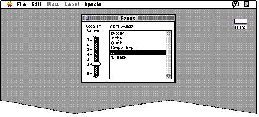

|
People With a Hearing DisabilityPeople with a hearing disability cannot hear auditory output at normal volume levels or at all. If important cues are given with sound, they should be visually available as well. Software should never rely solely on sound to provide important information. If you don't automatically supplement all audible messages with visual cues, allow the user to choose visible messages instead of audible ones. For example, in the Speaker Volume control in the Sound control panel, the system beep can be set to 0, which has the effectof flashing the menu bar instead of playing a sound to notify the user of a warning condition. Figure 2-7 shows the Sound control panel with its Speaker Volume control set to flash the menu bar as a visual clue. Figure 2-7 The Sound control panel  To indicate activity, hardware should have visible
lights in addition to |